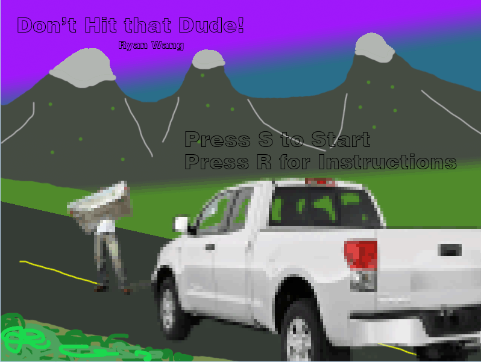
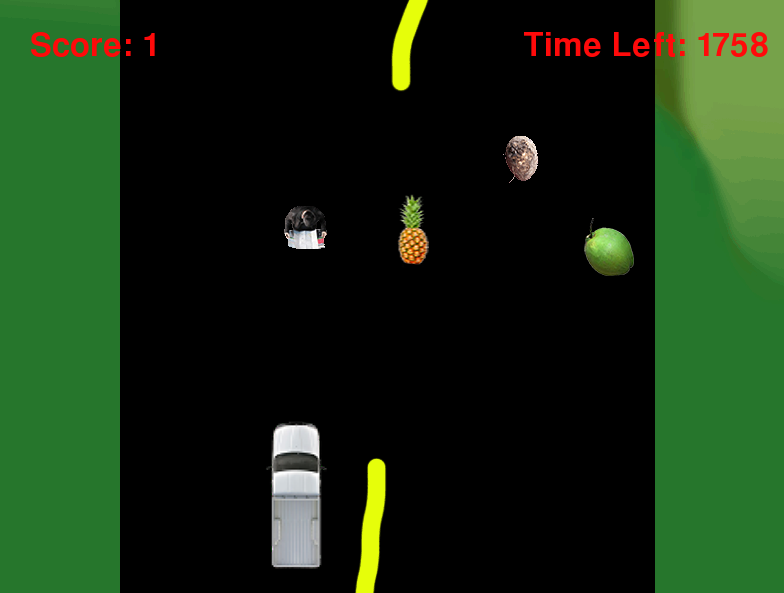
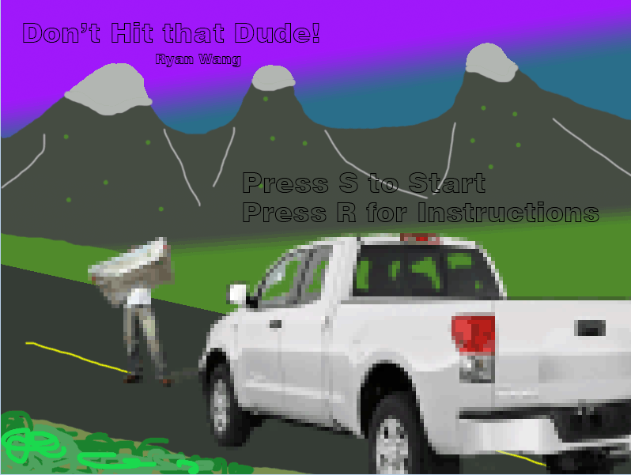
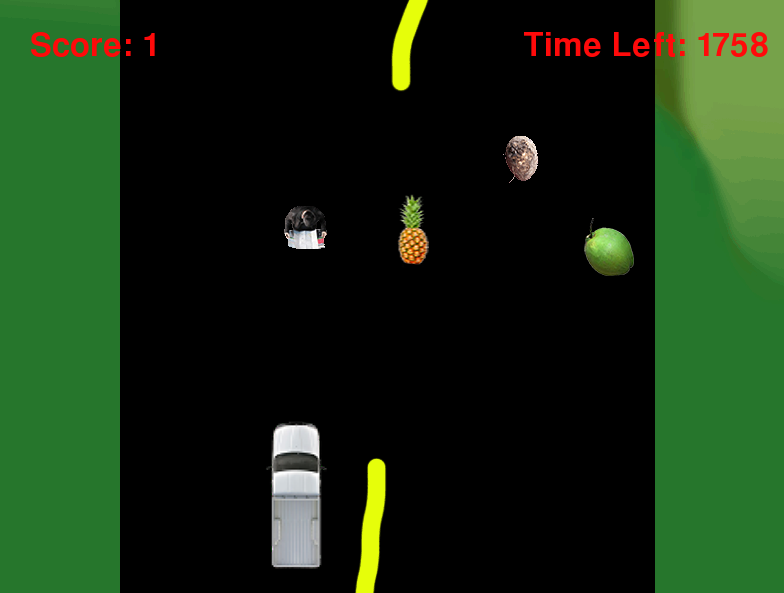

Final Content
Don't Hit that Dude!


Don't Hit that Dude!
 I revamped the final project that I made for Python. The game is still an 'infinite' runner with a scrolling background where you try to avoid hitting the people on the road. The dudes on the road are a part of the list that the enemies were from the DodgeRunner. When they reach the bottom of the screen, they disappear and reappear at the top. The score increases by one when this happens. Whenever the score is divisible by 5, another guy appears. When you reach 25 score, you will 'win'. There are also green coconuts, which will increase the score by 1 when they are touched. There are yams that will decrease the score by 2 when touched. There is also a timer in milliseconds that will cause the game to end if it hits zero. Pineapples spawn that will increase the timer by 500 when touched. I also added a win, lose and instruction screen. The title screen was also updated.
Concepts Learned
- Instruction Screen - I created a boolean called titleScreen. If the R key was pressed, the boolean would turn false and the instruction screen would appear.
- Score - I had to find a way so that the items falling would affect the score in some way. I had all of the files return a score variable, then in the truckRunner file I created a score variable which was all of the returned variables added together.
- Timer - I wanted to add a timer to give incentive to collect the coconuts instead of just trying to survive. I created a numSeconds variable and set it to 2000 to give the player 20 seconds. Touching a pineapple will add 500 to this value. Once the variable is less than 0, the game will end.